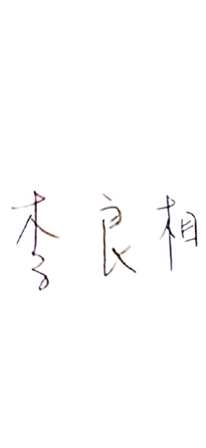
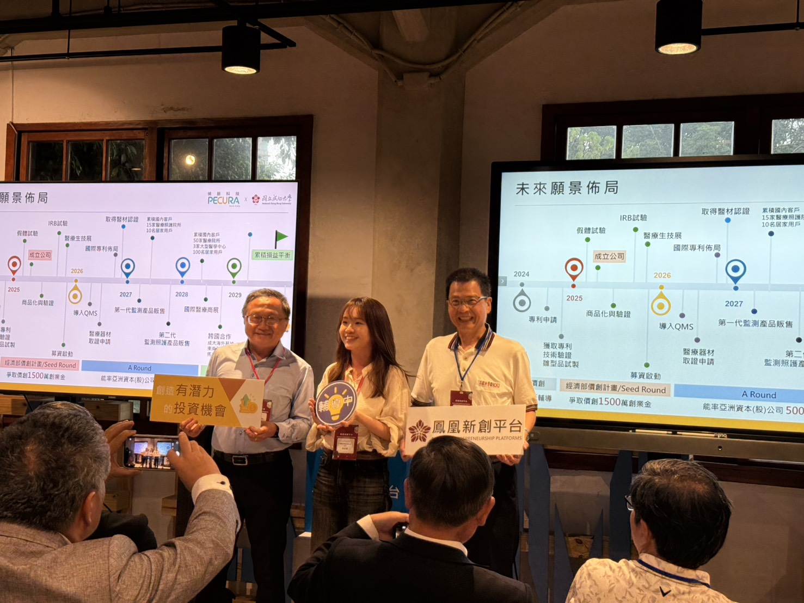
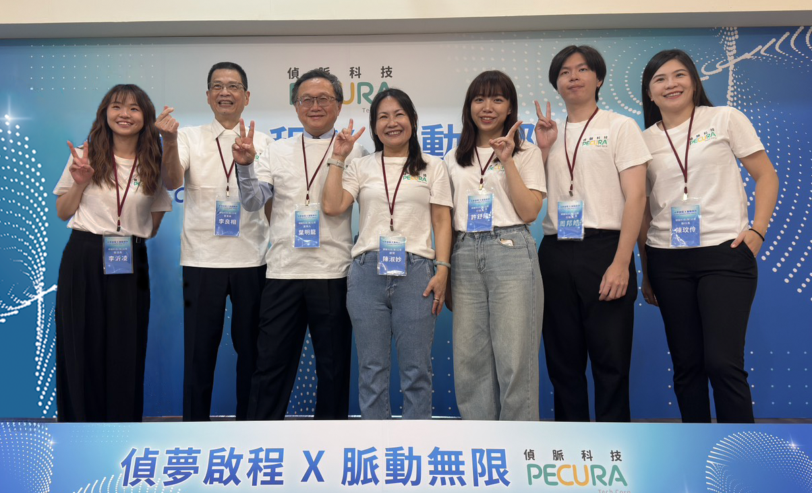
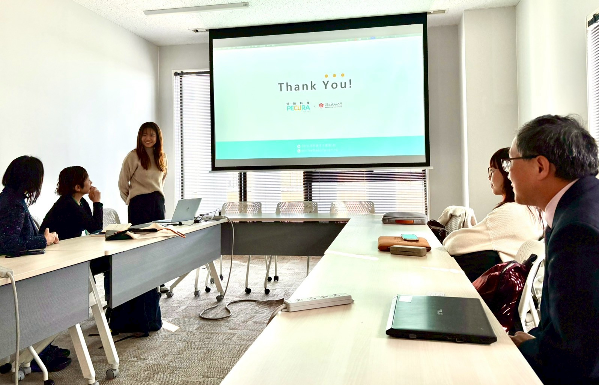
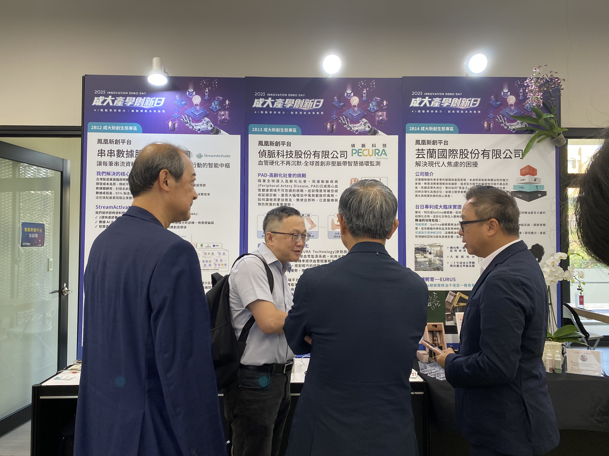

About PECURA Technology
About the Company
PECURA's products are designed for the early screening and long-term monitoring of Peripheral Artery Disease (PAD). By simultaneously measuring PPG and ECG signals via four-limb sensors, we provide clinical-grade vascular stiffness indices and peripheral vascular risk assessments in approximately one minute.
Centered around "portability, cuffless design, and low operation threshold," we combine motion-artifact-resistant signal processing, AI analysis, and cloud-based trend tracking to extend vascular health management from hospitals to clinics, long-term care facilities, pharmacies, telehealth, and home environments.
One-Minute Test
Rapidly provides vascular stiffness and peripheral risk indicators.
Cross-Domain Integration
Clinics, long-term care, pharmacies, telehealth, and homes.
Cloud Tracking
Trend tracking and early warnings supporting long-term monitoring.
Clinical Orientation
Prioritizing clinical workflows and usability in design.
Company Vision
PECURA is a medical technology company focused on the development of non-invasive smart vascular monitoring systems. Through innovative sensing technologies, AI analysis, and cloud-based health management platforms, we are committed to creating faster, more accurate, and more accessible tools for vascular health assessment. We believe that the prevention of vascular diseases should not begin only after symptoms appear, but should start with daily monitoring, early warning, and long-term tracking, enabling high-risk individuals to better understand changes in their health while helping medical and care settings improve screening efficiency and quality of care.
Our vision is to bring vascular health management beyond major medical institutions and extend it to primary clinics, long-term care facilities, pharmacies, health examination centers, and home care environments. Through simple, comfortable, and accessible measurement methods, we aim to lower the barriers to vascular screening and help more people detect potential risks at an early stage. PECURA will continue to integrate clinical needs, engineering technologies, and data intelligence to advance vascular health care from one-time testing to continuous tracking, and from passive treatment to proactive prevention.
Looking ahead, PECURA will uphold the core values of “smart, friendly, and trustworthy” as we continue to develop innovative solutions that meet clinical standards and market needs. We strive to build an intelligent vascular care ecosystem that connects physicians, caregivers, and users, moving toward our goal of becoming a global leading brand in smart vascular health management.
Chairman’s Message
In today’s world, where population aging and the need for chronic disease management are rapidly increasing, we firmly believe that the value of medical technology lies not only in technological innovation, but also in improving people’s quality of health and future well-being.
Since its establishment, PECURA has upheld the core principles of “innovation,” “precision,” and “care.” We are dedicated to the research and development of smart vascular monitoring and non-invasive medical technologies, with the goal of providing more immediate, convenient, and efficient health care solutions through technology, while making medical testing more intelligent, accessible, and integrated into daily life.
We understand that every technological breakthrough is built upon the dedication of professional teams, the support of partners, and the trust of the market and society. Therefore, we will continue to strengthen our research and development capabilities, integrate clinical needs with global trends, build a smart medical brand with international competitiveness, and actively promote Taiwan’s biomedical technology on the global stage.
Looking ahead, I will continue to move forward together with the entire team, guided by integrity in business, driven by innovation in research and development, and committed to the mission of protecting human health. Together, we will continue to create both corporate value and social value as we embrace a new era of smart health care.


Phoenix Platform Annual Conference

PECURA Technology Founded

BIO Asia-Taiwan

Tohoku University Exchange
